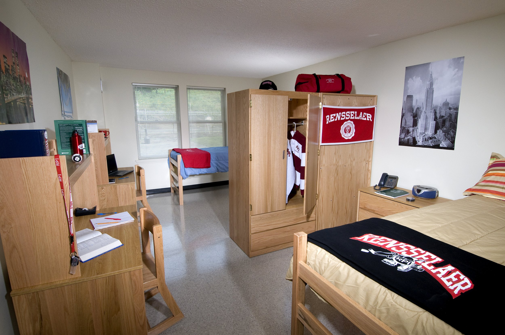
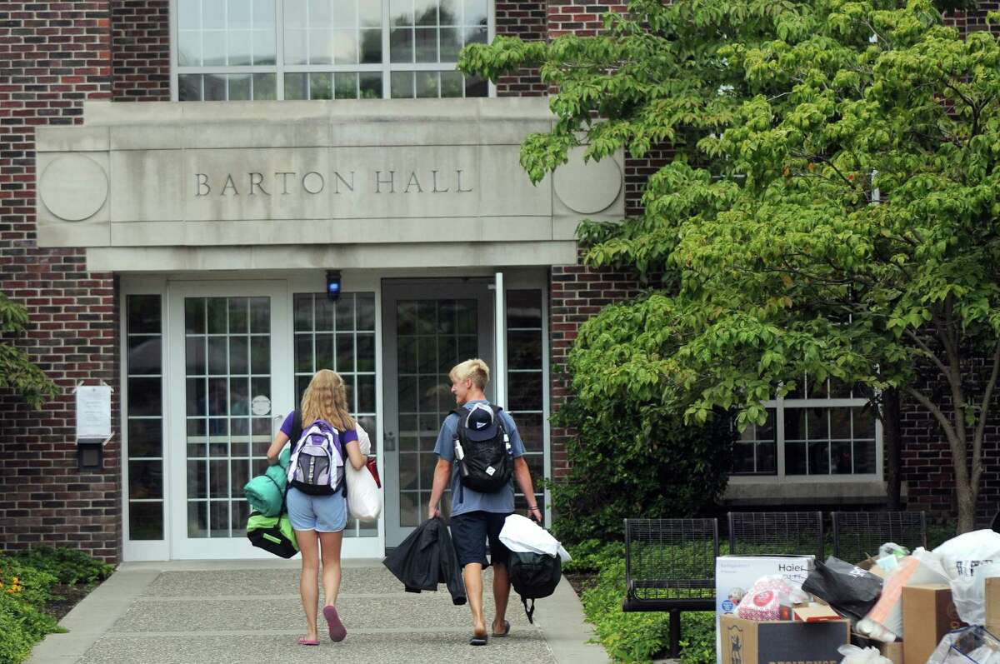
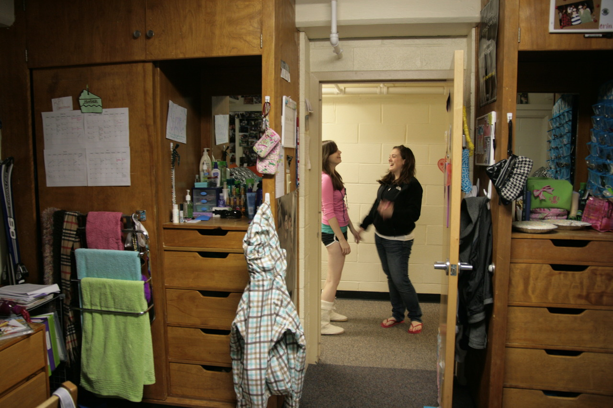
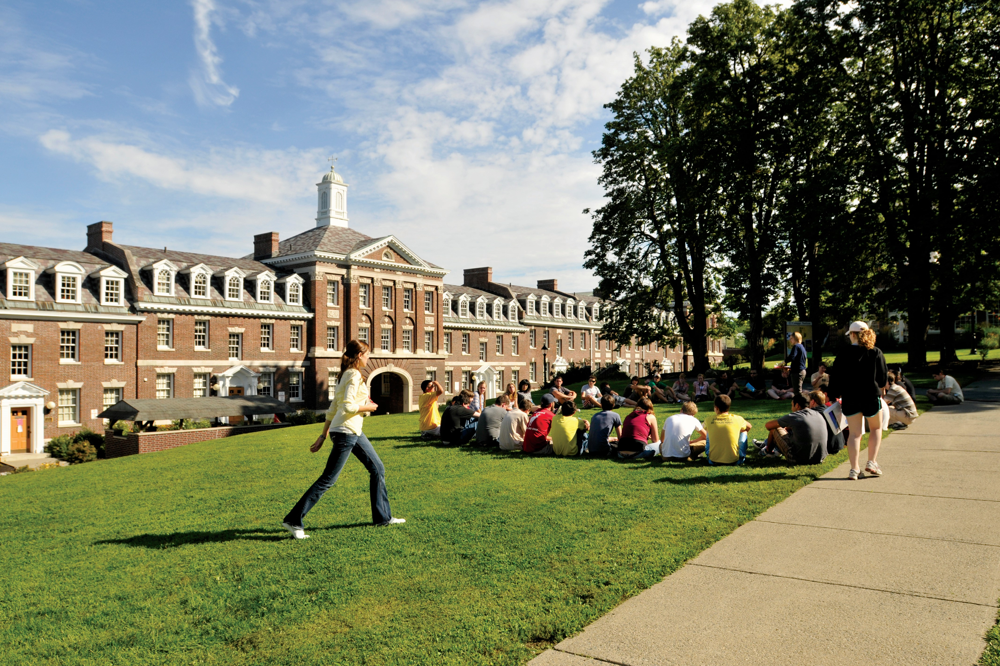
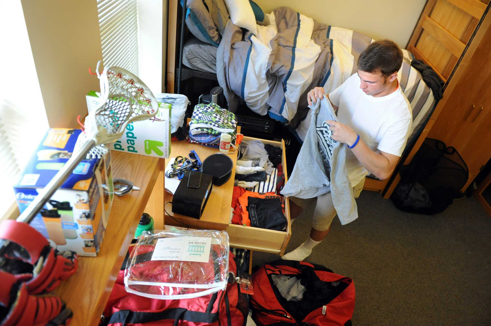

Welcome to RPI Xplore
Your guide to RPI's on-campus housing.






What should I expect as an incoming freshman?
Incoming freshmen at Rensselaer Polytechnic Institute (RPI) can
anticipate an engaging academic environment focused on STEM disciplines,
with rigorous coursework designed to foster critical thinking and
problem-solving skills. They'll find a vibrant campus community offering
various clubs, organizations, and research opportunities to explore diverse
interests. Expect a collaborative atmosphere where innovation and hands-on
learning are encouraged, alongside a supportive network of faculty
and peers dedicated to academic and personal growth. Additionally,
freshmen can look forward to the unique balance of academic challenges
and a well-rounded college experience within a historic and forward-thinking institution.
Where will I live?
At Rensselaer Polytechnic Institute (RPI), incoming freshmen typically
reside in on-campus residence halls, fostering a strong sense of community
among peers. These halls offer various amenities, including communal spaces
for socializing and studying, while providing support through resident advisors
and staff. RPI prioritizes creating a safe and inclusive living environment,
ensuring students' well-being. The university's housing options cater to
different preferences and needs, allowing freshmen to acclimate to college
life while building lasting connections. Overall, these residences serve as
integral spaces where freshmen can engage, learn, and establish a sense of
belonging within the RPI community.
What should I expect as a transfer student?
Transfer students coming to Rensselaer
Polytechnic Institute (RPI) can anticipate a dynamic academic environment
that values their prior coursework and experiences. They'll find a
supportive community that helps ease their transition, offering resources
tailored to their needs, including academic advising to ensure a smooth
integration into their chosen programs. RPI often provides transfer-specific
orientations or programs to familiarize them with campus life, helping them
navigate academic requirements and offering opportunities to connect with
other transfer students. Additionally, transfer students can expect a range
of extracurricular activities, research opportunities, and access to various
campus resources aimed at enriching their overall college experience while at RPI.
Where will I live?
Transfer students at Rensselaer Polytechnic Institute (RPI) typically have
several housing options available to them. They may reside in on-campus housing,
similar to the options available for incoming freshmen. However, depending on
space availability and individual preferences, transfer students might also
have the opportunity to live in university-owned apartments or off-campus housing.
RPI aims to provide transfer students with suitable housing options
that align with their preferences and needs, ensuring a supportive
and inclusive living environment. Transfer students might find
residence halls specifically designated for upper-level students
or housing arrangements that cater to their unique requirements as
they transition into RPI's community. Additionally, the university
offers support services to assist transfer students in navigating their
housing options and finding accommodations that suit their preferences and lifestyle.
What should I expect as a return student?
Returning students at Rensselaer Polytechnic Institute (RPI) can
expect a familiar yet evolving environment. They'll encounter a campus community
that continues to emphasize academic rigor and innovation while offering
opportunities for personal and professional growth. As returning students
progress through their academic programs, they can anticipate more
specialized coursework, research opportunities, and increased involvement
in extracurricular activities aligned with their interests.
Returning students often have a deeper understanding of campus resources and
may take on leadership roles within clubs, organizations, or research initiatives.
They'll continue to benefit from the support of faculty mentors and advisors
while having the opportunity to delve deeper into their chosen fields of study.
Moreover, returning students might witness ongoing improvements and developments
on campus, whether in terms of facilities, programs, or initiatives aimed at
enhancing the overall student experience. Overall, returning students can expect
a balance of familiarity and growth as they continue their academic journey at RPI.
Where will I live?
Returning students at Rensselaer Polytechnic Institute (RPI) have various housing
options available to them. They can choose to live in on-campus housing,
such as residence halls or university-owned apartments, where they might
have the opportunity to live in specialized housing communities or
upperclassman-focused living spaces.
Some returning students may opt for off-campus housing, exploring
apartments or rental properties in the surrounding areas of Troy, New York,
where RPI is located. Off-campus housing offers a different living experience
and more independence but often requires students to manage their accommodations
independently.
Additionally, as returning students progress through their academic
journey, they might explore different housing options, seeking roommates
or living situations that align with their changing preferences and lifestyles.
RPI aims to support returning students in finding housing that suits their needs,
whether they prefer the convenience of on-campus residences or the independence
of off-campus living.